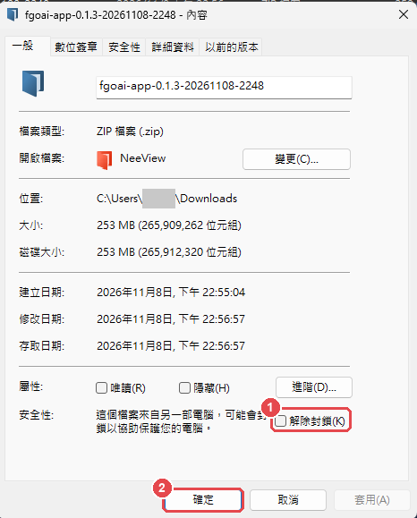
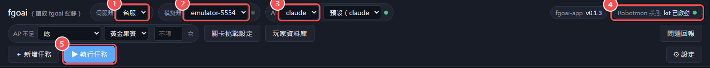

fgoai 工具包
✔ 工具包已經載入。這裡不用按開始，接著回到電腦上的 fgoai-app 操作。
① 在電腦上安裝 AI（Claude CLI 或 Gemini CLI）
fgoai 用 AI 判斷戰鬥和組隊，要先在電腦上裝好其中一種並登入：
- Claude CLI：裝好後開命令提示字元執行 claude auth login 登入。
- Gemini（AGY）CLI：裝好後照它的說明登入。
AI 不由開發者提供，用量算在你自己的帳號額度裡，請注意用量。
② 在電腦上安裝 fgoai-app
這個工具包要搭配 Windows 電腦上的 fgoai-app 使用。在電腦的瀏覽器打開：
https://github.com/Mobotmon/fgoai-release/releases/latest
- 下載最新版的 fgoai-app.zip。
- 解壓縮前先在 zip 上按右鍵 →「內容」，勾 ①「解除封鎖」，按 ②「確定」（沒有這個選項就不用做）。沒解除就解壓縮，Windows 可能會擋下裡面的程式。

zip 的「內容」：① 解除封鎖、② 確定
- 解壓縮到任何資料夾，點兩下裡面的 fgoai-app.exe。
- 第一次開啟會下載遊戲圖片（約 180 MB），等它下載完。
- 詳細步驟看同一個資料夾裡的「fgoai使用教學.pdf」。
③ 第一次使用
- 模擬器解析度設 1920×1080 橫向，打開 ADB。
- 開 FGO（日服或台服），停在主畫面。
- 電腦上開 fgoai-app，在上方選 ① 伺服器、② 模擬器、③ AI。
- 看 ④「Robotmon 狀態」，顯示「kit 已啟動」就準備好了。
- 按「玩家資料庫 → 從遊戲掃描資訊」，第一次建議全部勾。

fgoai-app 上方：①～④ 選好、確認 kit 已啟動
④ 每次使用前
- 模擬器、Robotmon 重開過，要回到 Mobotmon「已下載」再點一次這個工具包。
- fgoai-app 顯示「有 service，沒有 kit」：一樣回來點一次這個工具包。
- fgoai-app 提示工具包版本不對：到「腳本商店」重新下載，再點一次。
⑤ 執行時請注意
- 載入後不要再開別的 FGO 腳本，會把這個工具包蓋掉。
- 任務執行中不要操作模擬器。
- 聖晶石一律不吃；吃哪種果實照 fgoai-app 的「AP 不足」設定。
⑥ 遇到問題
| fgoai-app 連不到裝置 | 確認模擬器開著、ADB 有打開，在 fgoai-app 重新選模擬器。 |
| 有 service，沒有 kit | 回 Mobotmon 點一次這個工具包。 |
| 工具包版本不對 | 腳本商店重新下載，再點一次。 |
| 卡住或出錯 | 在 fgoai-app 按「問題回報」送給開發者。 |
版本 V0.1.5